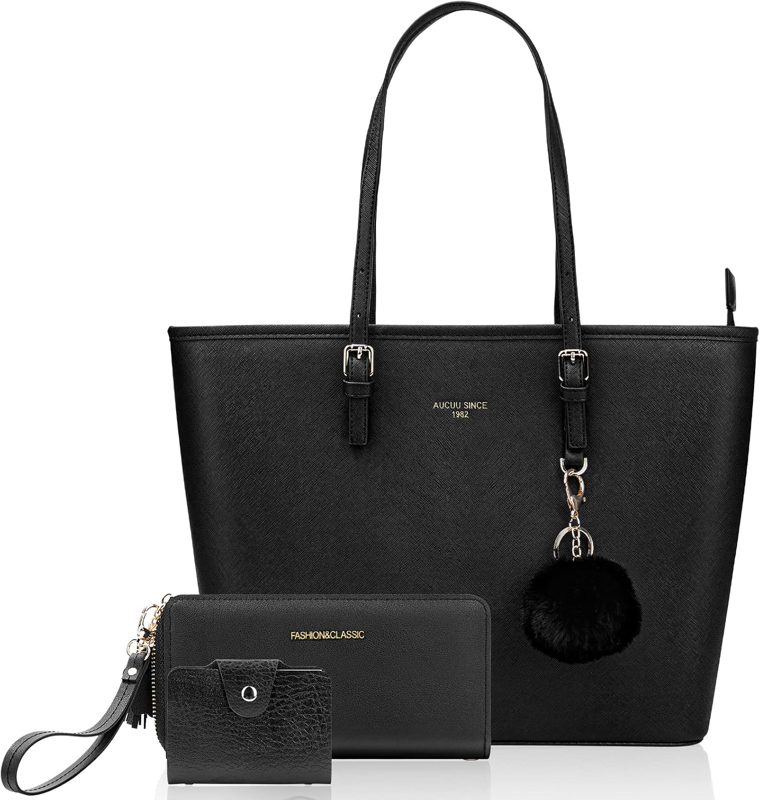

URAQT Bolsos Grandes de Mujer
URAQT Bolsos Grandes de Mujer, Señoras Tote Hombro, para Universidad, para Portatil 15.6 Pulgadas, Viene con uno Monedero, Bolso Shopper Cuero, Negro, Impermeable, Ligero
Carta de colección
URAQT Bolsos Grandes de Mujer, Señoras Tote Hombro, para Universidad, para Portatil 15.6 Pulgadas, Viene con uno Monedero, Bolso Shopper Cuero, Negro, Impermeable, Ligero
33,99 €
Tote● Común
URAQT · ASIN B09TH6H9SX
Lo que destacan las compradoras
- Calidad
- Capacidad
- Estética
Lo que critican
- Asas
Con una nota media de 4,3 sobre 5 en 5,141 valoraciones — una base de compra muy alta — no es un bolso para comprar a ciegas: es para comprar convencido.
Aparece en el diario los días: 23, 61, 99, 137, 175, 213, 251, 289, 327, 365. Nota media 4,3★ sobre 5.141 valoraciones reales.